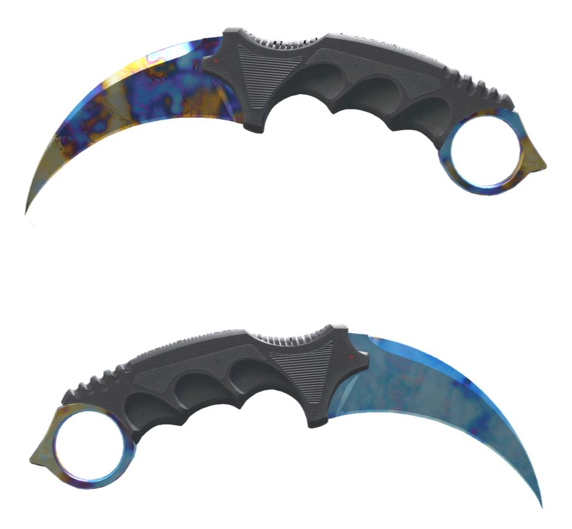
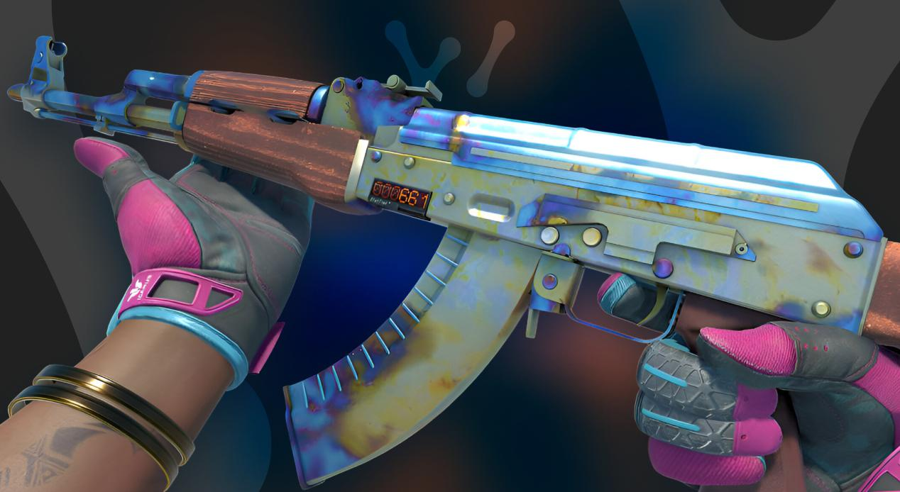
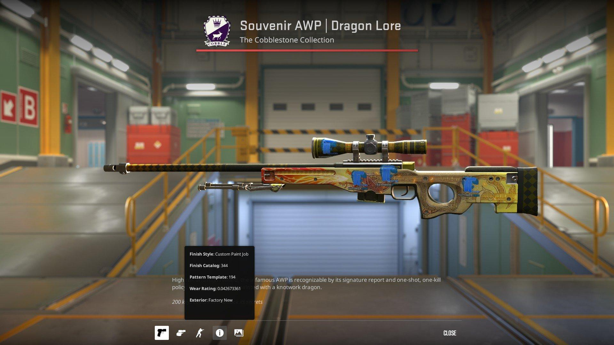
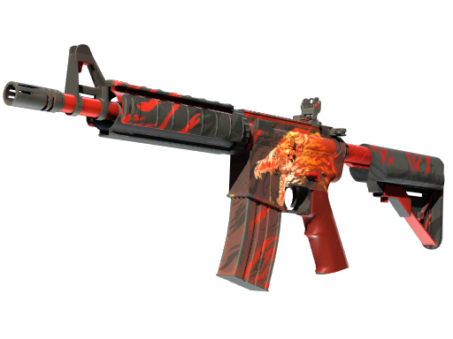
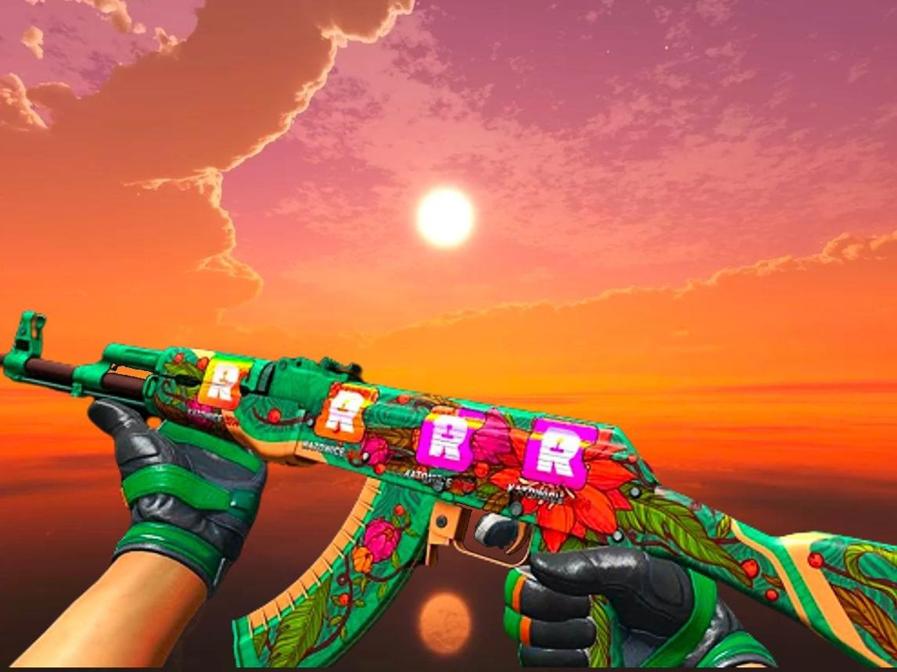

As 5 skins mais valorizadas em 2026
- Karambit | Case Hardened — Blue Gem #387
- AK-47 | Case Hardened — Blue Gem #661
- AWP | Dragon Lore
- StatTrak™ M4A4 | Howl
- AK-47 | Wild Lotus

Avaliada entre 1,5 e 2 milhões de dólares, nenhum exemplar chegou a ser vendido por essa quantia, mas informações divulgadas de negociações chegaram à esses valores.

Teve um exemplar vendido em junho de 2024 por aproximadamente 1 milhão de dólares, com o valor final da negociação flutuando entre 1 milhão e 1,5 milhões de dólares.

Teve um exemplar com 4 adesivos IBUYPOWER holo vendido por aproximadamente 265 mil dólares, mas atualmente o valor da sua versão nova de fábrica sem adesivos flutua entre 10 e 12 mil dólares.

Apesar de em 2020 ter tido uma versão sua com 4 adesivos IBUYPOWER holo vendida por 130 mil dólares em 2020, geralmente seu preço pode chegar até 30 mil dólares.

Teve um exemplar com 4 adesivos Reason Holo vendido por mais de 160 mil dólares em março de 2023, sua versão sem adesivos pode chegar até aproximadamente 14 mil dólares.
Fatores que influenciam o valor de skins
O valor das skins é influenciado por diversos motivos, e abaixo tem uma lista de alguns dos principais motivos
- Float (é um número exato entre 0,00 e 1,00 que define o nível de desgaste visual de uma skin)
- Se tem contador de mortes ou não
- Se a skin ainda é adquirível por meios comuns, como caixas
- Frequência com que ela é adquirida
Mas também existem casos excepcionais, como na M4A4 Howl, porque a arte original da skin foi alvo de um processo por violação de direitos autorais, como explicado nesse vídeo.